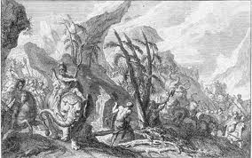

| |
First Punic War
The First Punic War was the first of the three wars fought between the Ancient Carthage and the Roman Republic and took place in 264 BC to 241 BC at Mediterranean Sea, primarily on the Mediterranean island of Sicily and its surrounding waters and also to a lesser extent in Italy and North Africa.In the First part of of the war,Rome won the alliance of the town Hieron in north east Sicily.This offensive was led by Claudius and Marcus Valerius Messalla in 263 BC.The Roman won further in 262 BC with the towns of Segesta and Agrigentium.Agregentum was won by Romans after a long and costly siege.In order to control Sicily ,Romans would have to win battles at sea but upto this point Romans didnt have working navy. whereas the Carthagians were masters of the seas .Romans nonetheless built 160 ships equipped with land bridges that dropped onto Carthagians ships,which helped the thwarted naval skills of the enemy and allowed Rome to use soldiers in land battle on ships.Rome managed to win supremacy of the sea.The Carthagians leader Hamiclar Barca ,was cornered in Sicily and surrendered in 241 BC.

First Punic War
For
more information please visit :
More Information about the First Punic War from wikipedia
| |
|
|